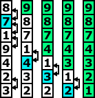

Porządkowanie bąbelkowe
Jeden z najprostszych koncepcyjnie algorytmów porządkowania ciągu opiera się na prostej idei:
jeśli ciąg nie jest uporządkowany, to znajdują się w nim przynajmniej dwa elementy,
które nie są na właściwych miejscach. Przestawmy więc te element i postępujmy tak dalej,
aż wszystkie będą na właściwych miejscach. Można nieco uprościć to postępowanie.
Zauważmy, że: jeśli ciąg zawiera dwa elementy, które nie są jeszcze ustawione
we właściwej kolejności, to istnieją w nim dwa elementy,m które stoją obok siebie
i nie są we właściwej kolejności. Na przykład w ciągu (2,4,6,1,3,5) elementy 4 i 3
nie są na właściwym miejscu, ale istnieją dwa elementy 6 i 1 stojące obok siebie,
które również nie są odpowiednio uszeregowane. Z kolei po ich przestawieniu
elementy 4 i 1 oraz 6 i 3 znajdą się na niewłaściwych pozycjach. Zatem w ciągu
nieuporządkowanym wystarczy przestawiać ze sobą elementy, które są ustawione
w złym porządku i znajdują się na sąsiednich miejscach. Aby tę strategię porządkowania
zamienić na algorytm, musimy określić dodatkowo, w jakim porządku będziemy szukać
takich par do przestawienia. Z jednej strony nie możemy pominąć żadnej z nich,
a z drugiej – chcemy to robić w możliwie najbardziej efektywny sposób.
Algorytm bąbelkowy jest metodą porządkowania ciągów, która polega na przestawianiu
sąsiednich par elementów stojących w nieodpowiedniej kolejności, przy czym ciąg
jest przeglądany w tym samym kierunku tak długo, jak długo może w nim wystąpić
jeszcze para elementów w niewłaściwym porządku. Oznacza to, że po każdym przestawieniu
dwóch elementów należy jeszcze sprawdzić czy ta zamiana nie zepsuła właściwego
uporządkowania między innymi sąsiednimi elementami.

Działanie algorytmu bąbelkowego ilustrujemy na rysunku w taki sposób,
w jaki zwykle jest on przedstawiany – elementy o większych wartościach są wynoszone
wyżej, jakby przywiązane zostały do nich większe bąbelki powietrza – stąd nazwa algorytmu.
Pokazany na tym rysunku ciąg jest porządkowany w czterech etapach-przebiegach
ciągu w poszukiwaniu elementów do przestawienia. Czarnymi strzałkami oznaczyliśmy
zamiany elementów (znaczenie kolorów poszczególnych elementów wyjaśnimy za chwilę).
Ten przykład ilustruje, że wraz z liczą kroków zwiększa się liczba elementów,
które stoją na właściwym miejscu.
Łatwo zauważyć, że w każdym kolejnym etapie tego algorytmu, mamy przynajmniej
o jeden element mniej do przestawienia. Ale czy tylko jeden? Ponownie spójrzmy na rysunek.
Podany przykład ilustruje, że może ich ubyć znacznie więcej. Postarajmy się to wykorzystać.
Zauważmy, że jeśli (x, y) jest ostatnią parą sąsiednich liczb przestawianych
w danym przebiegu algorytmu, to w następnym przebiegu nie musimy już sprawdzać
par stojących powyżej elementu y – jedynie ten element może być jeszcze
przestawiony niżej. I właśnie niebieskim kolorem oznaczyliśmy element y.
Ponadto kolorem zielonym oznaczyliśmy te elementy, które nie musimy już porównywać,
gdyż wiemy, że znajdują się one na właściwych miejscach.
Spróbuj zrealizować wyżej opisany algorytm. Zaimplementuj funkcję „void uporzadkuj(n)”,
która powinna porządkować elementy tablicy wyświetlonej w osobnym oknie.
Aby funkcja działała prawidłowo należy skorzystać z dwóch funkcji specjalnych
„int porownaj(idx1, idx2)” oraz „void zamien(idx1, idx2)”. Obie funkcje są szczegółowo
omówione w zakładce „funkcje specjalne”.
W przypadku pojawienia się problemów z implementacją tej funkcji, powinieneś spojrzeć
na pseudokod algorytmu. Po zakończeniu implementowania porównaj swoje rozwiązania
z rozwiązaniem wzorcowym, a następnie przeczytaj podsumowanie.